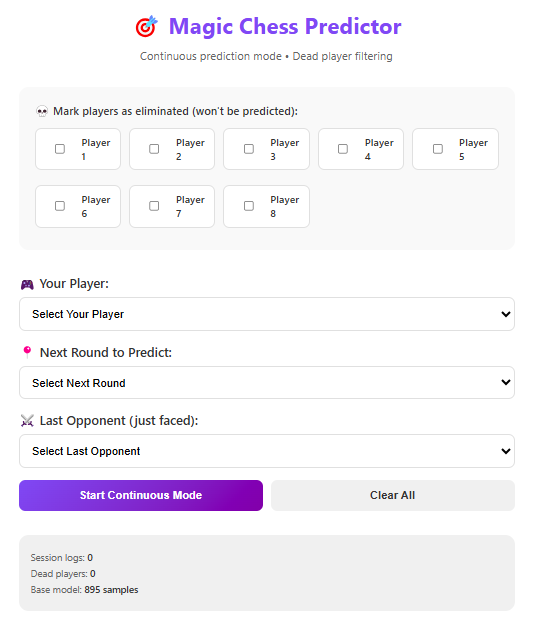

Magic Chess
Varian catur berbasis AI untuk mengeksplorasi sistem pengambilan keputusan, teori permainan (game theory), dan algoritma pencarian heuristik.
Masalah
Engine catur konvensional telah banyak dikembangkan, namun varian catur dengan aturan khusus masih jarang dieksplorasi. Proyek ini bertujuan merancang AI untuk varian catur kustom "Magic Chess", di mana beberapa bidak dibekali kemampuan khusus (seperti teleportasi, serangan area, atau kekebalan temporer). Tantangannya: fungsi evaluasi catur konvensional tidak dapat diterapkan langsung, serta tingkat pembentukan cabang keputusan (branching factor) melonjak tajam akibat ragam kombinasi kemampuan khusus.
Proyek ini menggabungkan minat pribadi saya pada catur dengan riset tentang sistem pengambilan keputusan dalam ruang keadaan (state space) yang kompleks. Pemahaman ini relevan untuk penerapan reinforcement learning maupun penyelesaian permasalahan teori permainan dalam Machine Learning.
Arsitektur
Mengapa Ini Sulit
- Perancangan heuristik evaluasi kustom: Pada catur standar, bobot nilai bidak dan preferensi posisi sudah terdefinisi jelas. Pada Magic Chess, keberadaan kemampuan khusus mengubah nilai strategis bidak secara dinamis. Perhitungan nilai efektivitas bidak memerlukan perancangan fungsi heuristik baru yang proporsional.
- Eksplosivitas branching factor: Setiap kemampuan aktif yang tersedia memperluas opsi keputusan secara kombinatorial. Walaupun Alpha-Beta pruning membantu memangkas cabang pencarian, pengurutan langkah (move ordering) tetap memegang peranan krusial dalam menjaga performa pencarian.
- Iterative deepening dengan toleransi waktu: AI harus mampu menentukan keputusan optimal dalam alokasi waktu yang terbatas. Penerapan teknik iterative deepening pada himpunan langkah yang luas memerlukan optimasi performa yang cermat.
- Penyesuaian melalui pengujian langsung (playtesting): Kualitas dan respon AI diuji melalui simulasi permainan interaktif. Menggunakan antarmuka Pygame yang sederhana, pembobotan heuristik terus disempurnakan berdasarkan alur permainan aktual.
Tech Stack
- Python: Core engine untuk representasi papan, generator alur langkah, dan algoritma pencarian.
- Minimax dengan Alpha-Beta Pruning: Mesin penentu keputusan dengan kedalaman pencarian yang dapat disesuaikan.
- Heuristik evaluasi kustom: Penilaian berbasis skor material, preferensi posisi, dan status kemampuan aktif.
- Pygame: Antarmuka visual interaktif untuk pengujian alur permainan.
- Optimasi move ordering: Pengurutan langkah cerdas yang memperhitungkan kemampuan khusus demi efisiensi pruning.
Di Dalam Sistem
Prediktornya berupa antarmuka Streamlit, bukan notebook, sehingga model wajib bisa dipakai oleh orang yang tidak membangunnya. Pemain ditandai sebagai tereliminasi, pemain aktif dan ronde berikutnya dipilih, dan lawan terakhir yang dihadapi dijadikan konteks.

Apa yang Akan Saya Lakukan Berbeda
- Mengeksplorasi MCTS (Monte Carlo Tree Search): Untuk domain permainan dengan branching factor tinggi, MCTS sering kali menawarkan performa yang lebih efektif dibandingkan Minimax konvensional.
- Melatih pembobotan evaluasi via self-play: Alih-alih melakukan penyesuaian manual (hand-tuning), pendekatan self-play berbasis reinforcement learning dapat dimanfaatkan untuk menemukan penentuan bobot bidak secara otomatis.
- Mengembangkan antarmuka berbasis web: Membangun antarmuka web (React + WebSocket) akan mempermudah aksesibilitas permainan agar dapat diuji coba oleh pengguna secara umum.
- Menyediakan tingkat kesulitan bervariasi: Penyesuaian kedalaman pencarian serta variasi elemen terkontrol akan menjadikan AI lebih ramah bagi pemain pemula namun tetap menantang untuk pemain berpengalaman.
Pelajaran Utama
Pengembangan Game AI melatih pemahaman mendalam tentang teknik pencarian dengan batasan tertentu, perancangan heuristik, serta penyeimbangan antara akurasi dan beban komputasi. Tantangan serupa juga dijumpai pada sistem ML di tingkat production.
I'm open to full-time, contract, and freelance work.